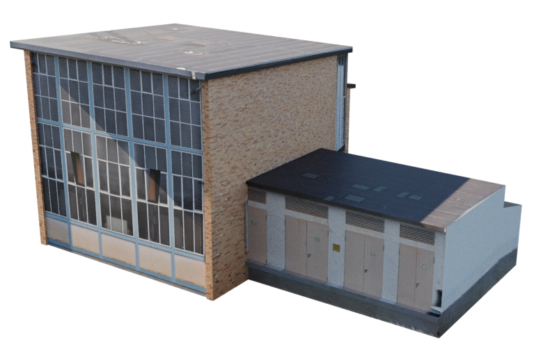

Programmierung
FUDGE
Furtwangen University Didactic Game Editor ist eine TypeScript basierte GameEngine speziell für die Lehre von Prof. Jirka Dell’Oro-Friedl. Hier arbeitete ich an der Implementierung von Meshgenerierung, OBJ-Meshimport und Shadern. Im Projekt Chemistry with FUDGE verwendeten wir die Engine in sehr frühen Stadium, um einen Atom-Orbital-Baukasten umzusetzen.

Evalgo
Evalgo ist ein Kurs-Management System für Studierende und Dozenten, dass für den Kurs Aktuelle Entwicklungen im Bereich Online-Medien von Prof. Dirk Eisenbiegler zum Thema Evaluation von Go für Webdevelopment entwickelt wurde.

Dozenten und Tutoren können Aufgabenstellungen verfassen und Studierende diese abgeben.

Zu den Abgaben können von Dozenten Feedback und Noten gegeben werden, die in einer Übersicht und Notentabelle für authorisierte Nutzer erscheinen.

Echtzeit-Computergrafik
Zum Kurs von Rainer Duda entwickelte ich hier
3D
A Cat in Time
Mobilegame (Unity) für das Stadtmuseum Tübingen. Um den Geist der Katzenmumie zu retten reisen wir in das Jahr 1607. Hier war ich für 3D-Modelle und Texturierung, sowie für Musik zuständig. Der Soundtrack hat die Besonderheit, dass beim Zeitsprung die Instrumente wechseln.

In Kooperation mit Linus Ehmann (Programmierung), Tim Marquardt (Konzept) und Olivia Storz (Design & Konzept)
SABA
Einscannen per Drone und Nachmodellierung des alten SABA Farbikgeländes im Innovationspark Villingen.
